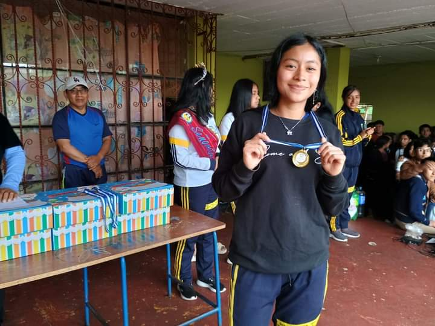

Imágenes


El Instituto Nacional de Educación Básica y Diversificada Sergio Leonel Celis Navas, ubicado en Sumpango Sac, Guatemala, se enfoca en proporcionar una educación integral que responda a las necesidades de la comunidad. Su misión es formar estudiantes con una sólida base académica, habilidades prácticas y valores que les permitan desarrollarse plenamente en la sociedad. Este instituto ofrece una variedad de programas educativos que buscan diversificar la formación de los estudiantes, preparándolos tanto para el mundo laboral como para continuar sus estudios. Además, se promueve un ambiente inclusivo y participativo, fomentando la participación de padres de familia y la comunidad en general en el proceso educativo.
El Instituto Nacional de Educación Básica y Diversificada (INEB-D), en el contexto de Sumpango, Sacatepéquez, ha jugado un papel importante en la educación de la región.
Historia del INEB-D en Sumpango, Sacatepéquez
El Instituto Nacional de Educación Básica y Diversificada (INEB-D) fue establecido en Guatemala para abordar las deficiencias en el sistema educativo, especialmente en comunidades rurales y de alta diversidad cultural. En el municipio de Sumpango, Sacatepéquez, este enfoque ha sido crucial para mejorar las condiciones educativas y promover el desarrollo integral de los estudiantes.
Contexto Local
Sumpango es conocido por su rica tradición cultural y su vibrante comunidad. Sin embargo, como muchas otras áreas en Guatemala, ha enfrentado desafíos significativos en términos de acceso a la educación, infraestructura y recursos. La alta tasa de analfabetismo y la necesidad de una educación que refleje la diversidad cultural de la región han llevado al INEB-D a implementar estrategias específicas para atender estas necesidades.
Fundación del INEB-D en Sumpango:Desde su creación, el INEB-D se ha centrado en ofrecer una educación inclusiva y de calidad. En Sumpango, se han desarrollado programas diseñados para involucrar a las comunidades en el proceso educativo, reconociendo la importancia de la participación familiar y comunitaria. Esto ha permitido no solo aumentar la matrícula escolar, sino también mejorar el rendimiento académico.
La Influencia de Sergio Leonel Celis Navas: Sergio Leonel Celis Navas ha sido una figura clave en la gestión educativa dentro del INEB-D en Sumpango. Su liderazgo ha estado marcado por un compromiso firme con la mejora de la educación y el bienestar de los estudiantes.
Iniciativas Educativas
Bajo su dirección, se han implementado varias iniciativas:
Capacitación Docente: Se han llevado a cabo programas de formación continua para los maestros, centrados en metodologías pedagógicas modernas y en la incorporación de tecnología en el aula. Esto ha permitido a los docentes adaptarse a las necesidades cambiantes de los estudiantes.
Currículo Diversificado: Se ha trabajado en la creación de un currículo que no solo cumpla con los estándares nacionales, sino que también integre la cultura local, incluyendo aspectos del idioma y las tradiciones mayas. Esto ha ayudado a los estudiantes a sentirse más conectados con su educación.
Programas de Inclusión: Celis Navas ha promovido políticas que garantizan que todos los niños, incluidos aquellos con discapacidades y de contextos vulnerables, tengan acceso a la educación. Esto ha implicado la adaptación de instalaciones y la formación de personal especializado.
Resultados y Logros
Gracias a estas iniciativas, Sumpango ha visto mejoras notables en la educación:
Aumento en la Matrícula:La participación de los estudiantes ha crecido, y más familias están optando por inscribir a sus hijos en el sistema educativo.
Reducción del Analfabetismo: Programas específicos han contribuido a disminuir las tasas de analfabetismo en la región.
Empoderamiento Comunitario: La colaboración con las familias y la comunidad ha fortalecido el tejido social, generando un sentido de pertenencia y responsabilidad compartida en la educación de los jóvenes.
Desafíos Persistentes
A pesar de estos avances, Sumpango y el INEB-D aún enfrentan retos significativos. La infraestructura educativa necesita mejoras, y el financiamiento sigue siendo un problema en muchas áreas. Además, es fundamental seguir adaptando los programas a las necesidades cambiantes de la comunidad.
Conclusión
El INEB-D en Sumpango, bajo la guía de líderes como Sergio Leonel Celis Navas, ha realizado un trabajo fundamental en la transformación del sistema educativo. Con un enfoque en la inclusión, la capacitación docente y la relevancia cultural, ha logrado avances significativos en la educación de la región. Sin embargo, la labor continúa, y es crucial que se mantenga el compromiso con la mejora continua para asegurar que todos los estudiantes tengan acceso a una educación de calidad que les permita alcanzar su máximo potencial.